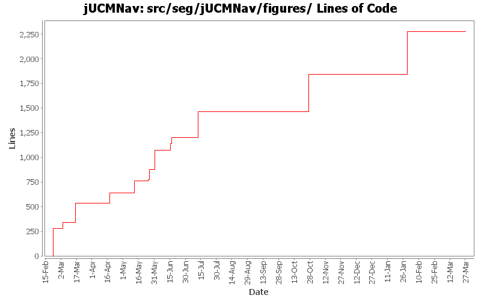

Summary Period: 2005-02-22 to 2006-03-27
[root]/src/seg/jUCMNav/figures
 anchors
(3 files, 215 lines)
anchors
(3 files, 215 lines)
 router
(4 files, 859 lines)
router
(4 files, 859 lines)
 util
(4 files, 409 lines)
util
(4 files, 409 lines)

Total Lines Of Code:
2275 (2006-03-31 18:01)
| Author | Changes | Lines of Code | Lines per Change |
|---|---|---|---|
| Totals | 163 (100.0%) | 2275 (100.0%) | 13.9 |
| jfroy | 26 (16.0%) | 813 (35.7%) | 31.2 |
| etremblay | 48 (29.4%) | 663 (29.1%) | 13.8 |
| jkealey | 54 (33.1%) | 585 (25.7%) | 10.8 |
| jmcmanus | 24 (14.7%) | 214 (9.4%) | 8.9 |
| jpdaigle | 11 (6.7%) | 0 (0.0%) | 0.0 |
Fixed problem with the intentional element name that did not fit in the figure
0 lines of code changed in:
Externalize String
0 lines of code changed in:
Fix the URNlink to support multiple links type. Modification of the links display in UCM
0 lines of code changed in:
Added feedback in UCM for URNlinks
0 lines of code changed in:
Fixed problem with the GRLNode elements resizing.
0 lines of code changed in:
Fixed direction of Dependency (depender is the target and dependee is the source of the link)
0 lines of code changed in:
Added actor evaluation level.
Fixed bug when entering non integer for evaluation level
0 lines of code changed in:
Added evaluation labels in evaluation scenario view.
0 lines of code changed in:
Evaluation scenario view added.
0 lines of code changed in:
Merge of GRL branch with the main trunk
431 lines of code changed in:
Merge grl branch with the main trunk
Major modification of the metamodel (URN_08.mdl) (Added GRL metamodel, New interfaces that define common element in GRL and UCM, Modified UCM-Map package to implement the new interfaces (some associations and attributes have been refactored using the interfaces), Map is now called UCMmap (to resolve conflict with java.util.map in the implementation), Removed Path Graph)
Modification of the code that used the metamodel.
Started modification of jUCMNav to support GRL.
382 lines of code changed in:
bug 246 - changed appearance of dynamic stub with framework upgrade.
0 lines of code changed in:
Lesson learned... Never try to make an SWT application in 3.1 for 3.0.... The layout won't work like you designed it in 3.1...
Added condition editing in the StubBindingDialog. Quick hack to take what was working in the 3.1 version done during the day and add it to the 3.0 version. The layout is not as nice though in 3.0.
0 lines of code changed in:
bug 344 - localization wizard
0 lines of code changed in:
bug 359 - had forgotten to set new maps to current mode;
fixed bugs in ET's resp view that sometimes made the app crash
fixed a few javadoc tags
0 lines of code changed in:
cleaned seg.jUCMNav.figures.* and added javadoc. fixed a few regression bugs I introduced earlier today. made startpoint figure use center of bounds instead of using absolute offset. cleaned JUCMNavFigure from having redudant info. merged AndFork/AndJoin figures and OrFork/OrJoin figures as they were identical.
258 lines of code changed in:
fixed andjoin/andfork figures; new label now inserted properly.
0 lines of code changed in:
and fork / and join figures
0 lines of code changed in:
bug 343 - end point figure thicker
0 lines of code changed in:
end point connected to start/wait/timer is no longer overlaps other figure.
0 lines of code changed in:
(42 more)
Generated by StatCVS 0.2.4